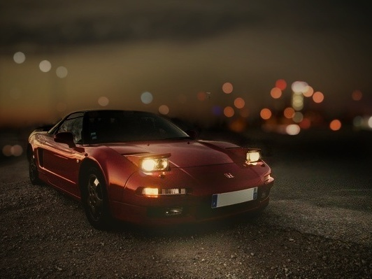

Apasionado por la fotografía, especialmente por el potencial infravalorado de la fotografía móvil.
En este sitio web te enseñaré a sacarle todo el potencial a tu fotógrafo interior. Con tan solo un celular y con técnicas fáciles y rápidas de aprender.
Para validar tal promesa, a continuación te sorprendo con algunas de mis obras.
